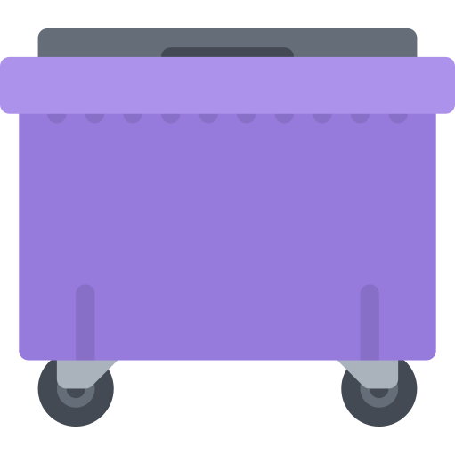

This is a 1-liter water bottle. It contains about 23 grams of plastic. |
 This is a dumpster. Lets fill it with a ton of plastic. That's 39,443 1-liter water bottles.... |
Learn about plastic
- Most discussions of plastic talk about tons of plastic. How many plastic bottles are in a ton of plastic?